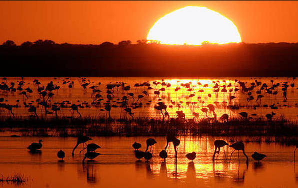
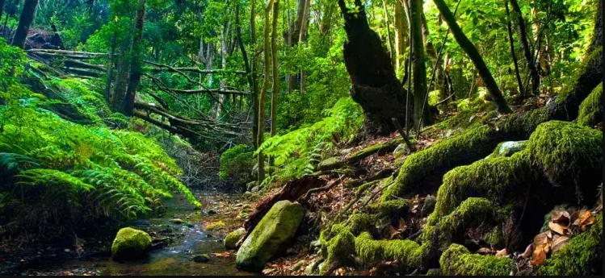
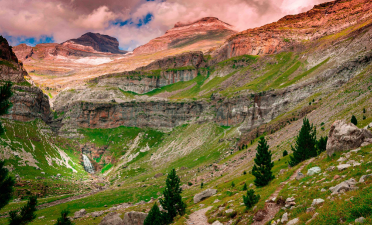

BÉNS NATURALS
-
Parc Nacional de Doñana (Andalusia, 1994)

Vista del Parc Nacional de Doñana, Andalusia. -
Parc Nacional de Garajonay (Canàries, 1986)

Vista del Parc Nacional de Garajonay, Canàries. -
Pirineus – Mont Perdut (Aragó/Navarra, 1997)

Vista del Mont Perdut als Pirineus, Aragó/Navarra